01
01
Community Room
Node — absence of shared public space
Architectural Designer · Chicago / Kazakhstan
I read disconnection — social, spatial, urban — and turn it into shared ground. A path that wasn’t the standard corporate route, and is stronger for it.
01 The idea
Every site arrives as a knot — a tangle of people, terrain, and use. My work pulls one strand at a time until disconnection becomes shared form. I observe before I propose, I build with my hands, and I keep people at the center.
02 The Path
A portfolio is usually a list of buildings. Mine is a route — the same strand running through the people who hosted me, the craft that supported me, and the ground that received the work.
Assistant Architect & Project Engineer
Two summers inside working firms. I produced construction drawings for a 700 m² supermarket and pharmacy, and redesigned a building entry to meet ADA — permitted on the first submission. The knot: turning client wishes into documents that pass on the first try.
B.Arch → M. Tall Buildings, IIT
Illinois Institute of Technology became base camp: Dean’s List six semesters, the Elevate scholarship, then a master’s in tall buildings and vertical urbanism. The knot: how does a city stack people without stacking them apart?
Summer Study Abroad
A daily sketch for every day, and presentations on SANAA, Kengo Kuma, and Sou Fujimoto. I co-organized the IIT exhibition that came home with us. The knot: learning to see lightness, threshold, and restraint.
Design-Build Studio · Community Room
Concept to construction in eight weeks, inside a $50k budget. When the site relocated, I replanned the foundations and structural grid in five days. The knot: an absence of shared public space — answered in brick, steel, and our own hands.
Vertical Urbanism · Village in the City
A tower designed as a vertical village — terraces and social streets in the sky that bring elders, students, and families back into daily contact. The knot: isolation inside high-rise living.
03 Selected Work
Drag, scroll, or swipe →
01
Node — absence of shared public space
 02
02
Node — disconnection between urban levels
 03
03
Node — social isolation in vertical living
 04
04
Node — a fieldhouse without a field
04 Frames of Practice
Three experiences outside the traditional office — read in sequence — taught me how to observe, serve, and build. Each is a scene; each image is evidence.
01 — Japan · 2023 · Study Abroad
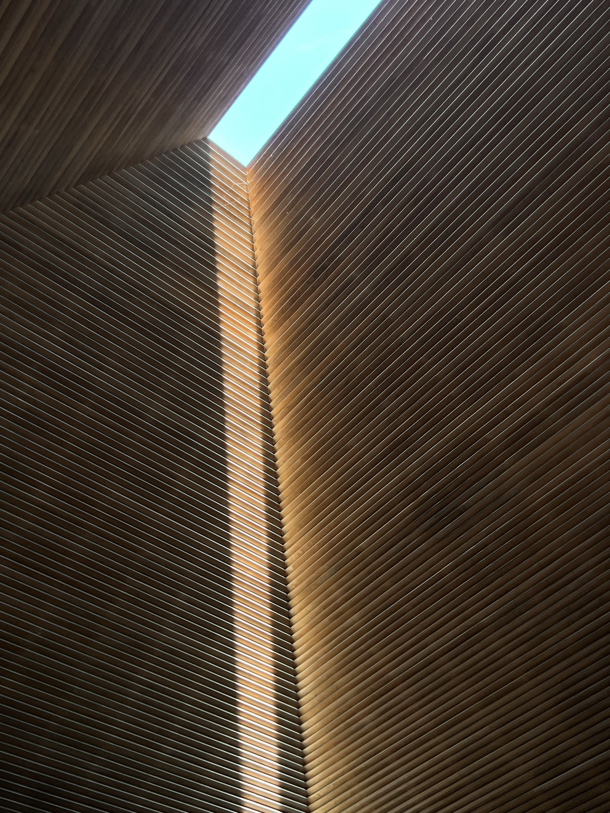
Daily sketching and architectural study in Japan sharpened how I read thresholds, light, and material restraint. It made my process slower in the best way — more observant before becoming formal.
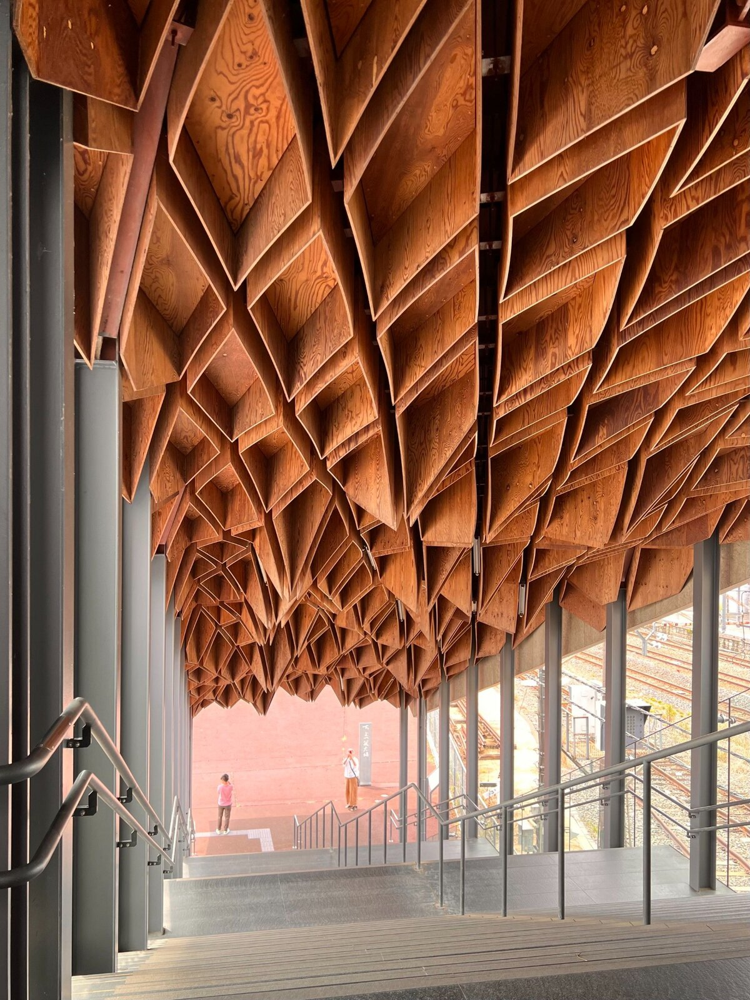
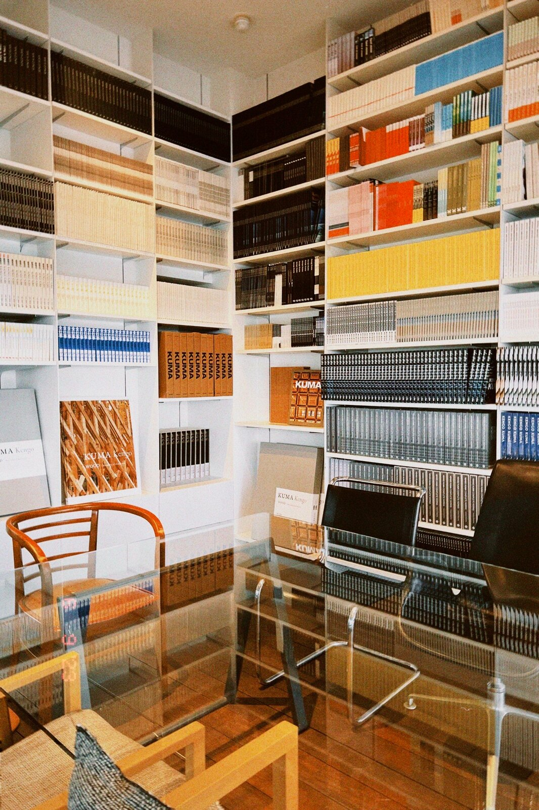
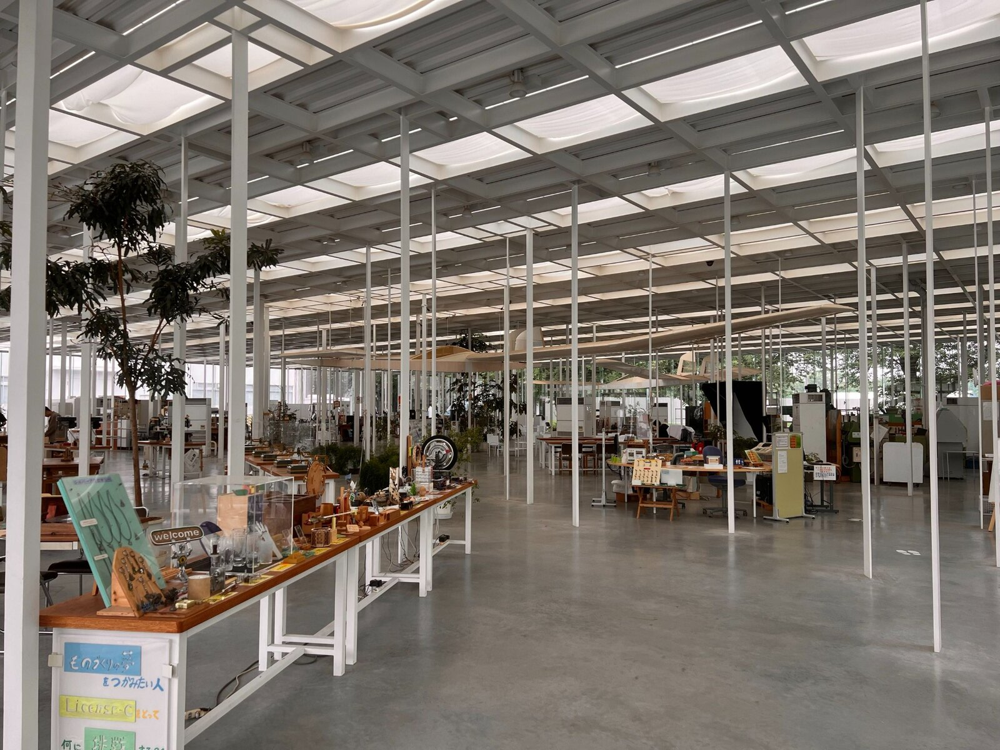
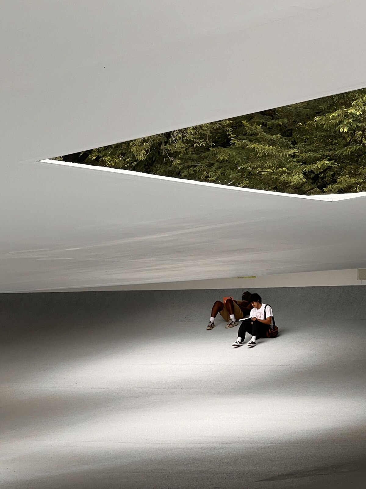


02 — Texas · Habitat for Humanity

Volunteering deepened my understanding of service, community, and the role of architecture in improving lives. It taught me to contribute practically, work alongside others, and treat buildings as lived environments.
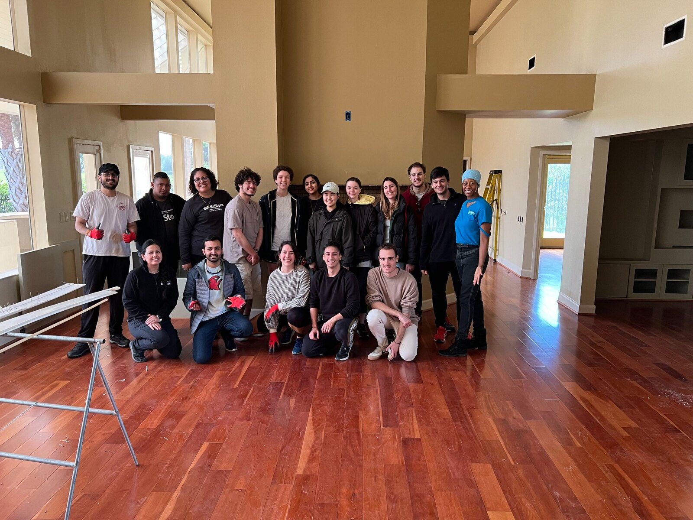
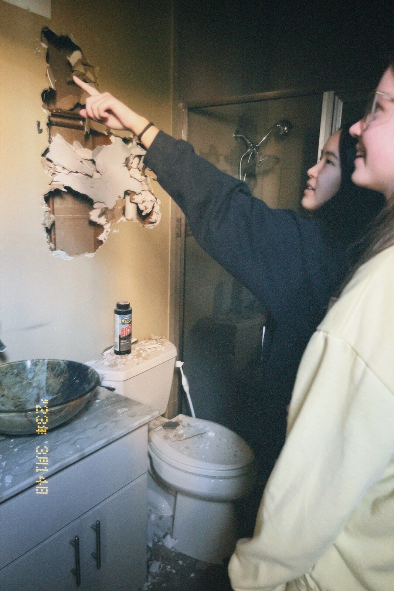
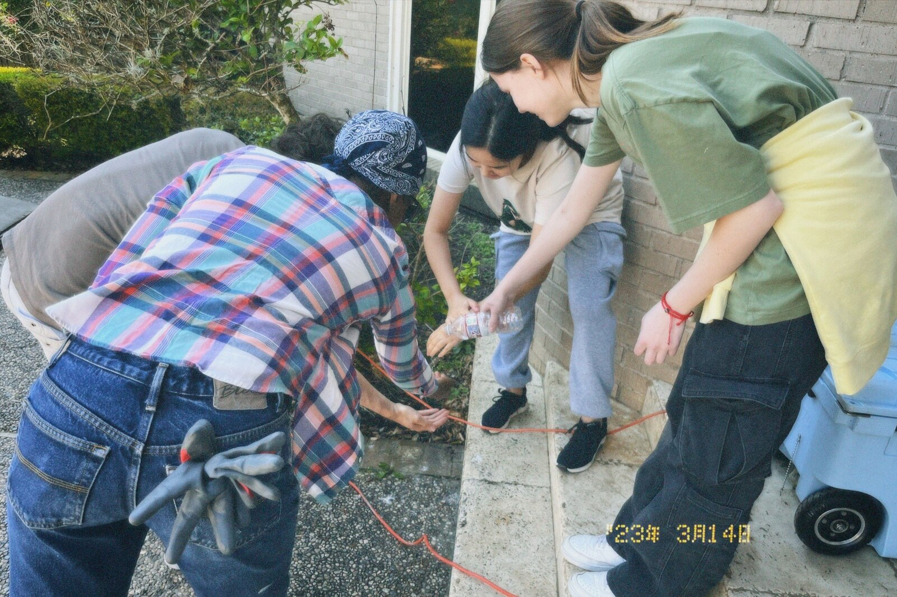
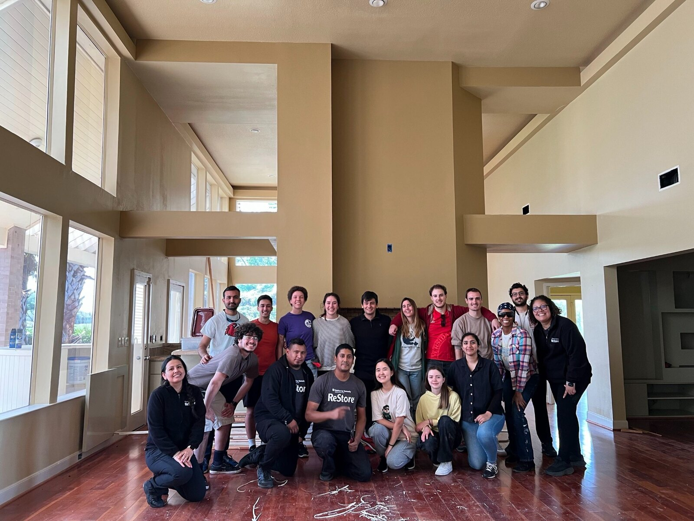


03 — Maharashtra, India · 2024 · Design-Build

Design-build moved design out of the studio and into coordination, budget, labor, weather, and construction sequence. It taught me to make decisions that can be communicated clearly and adjusted quickly.
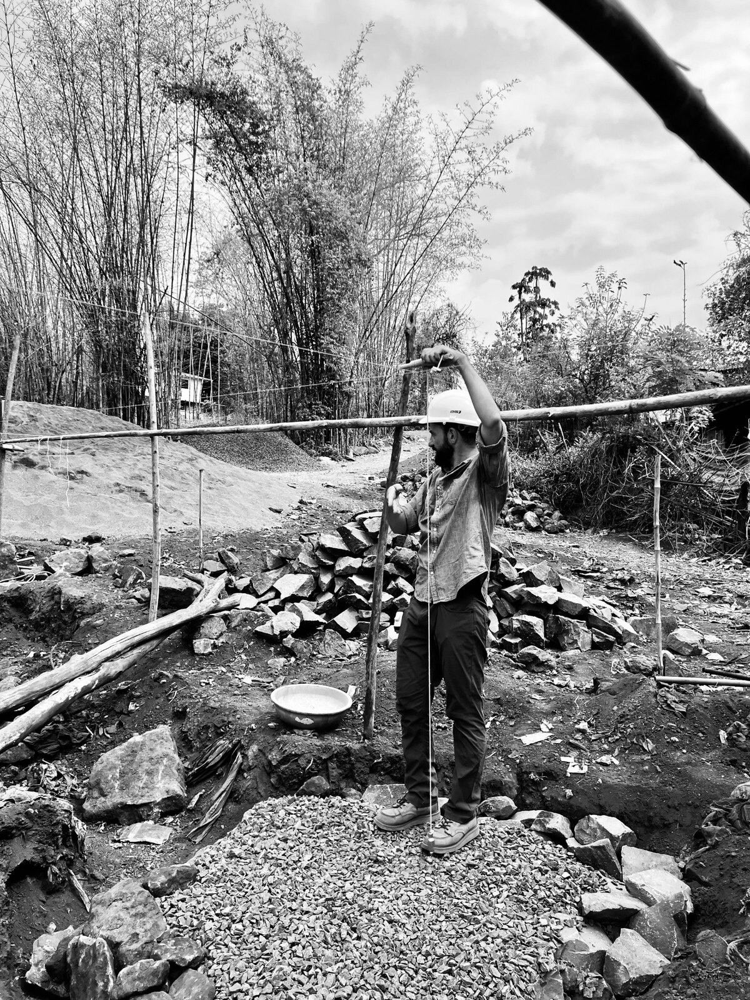
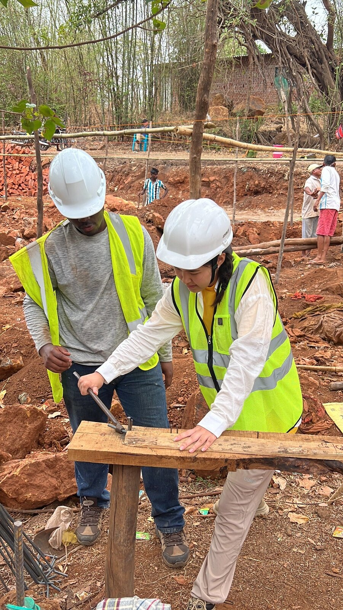
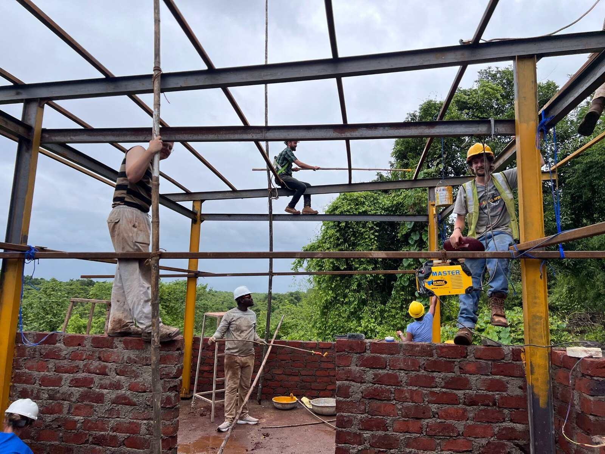
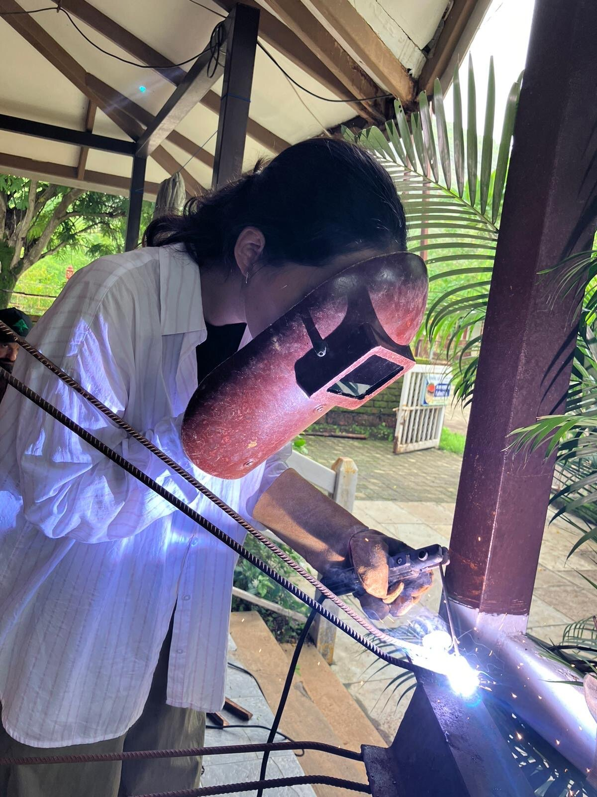


04 — Synthesis
Careful reading of context, people, and patterns.
From urban systems to details that get built.
Diagrams, drawings, and stories that align teams.
Flexibility to adjust ideas without losing intent.
Spaces that connect, support, and last.
Ideas that survive contact with budget, site, and craft.
05 Background
Illinois Institute of Technology — Chicago, IL
Illinois Institute of Technology — Chicago, IL
Dean’s List (6 semesters) · Elevate Scholarship ($5k)
Impact Partners Studio · Remote
Illinois Institute of Technology
IIT × Glass Wall Systems · India
Karachaganak · Aksay, Kazakhstan
BIM & Design
Revit · Rhino · Grasshopper · AutoCAD
Render & Analysis
V-Ray · Arnold · Lumion · Ladybug · Karamba
Graphics
InDesign · Illustrator · Photoshop · Lightroom
Fabrication
Laser · 3D print · CNC · Physical modeling